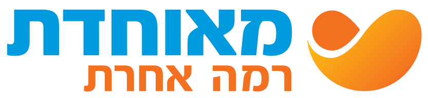
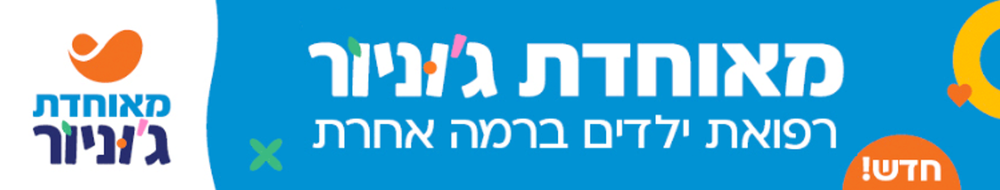
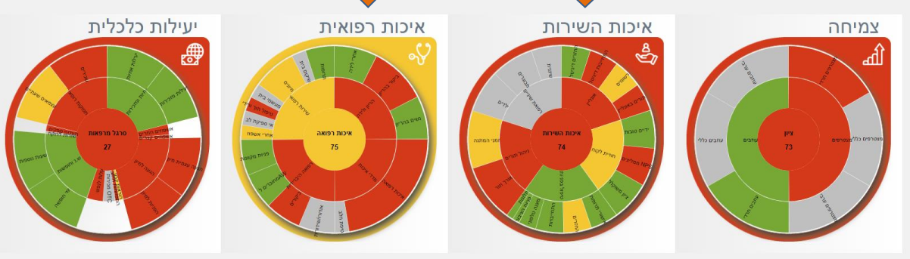
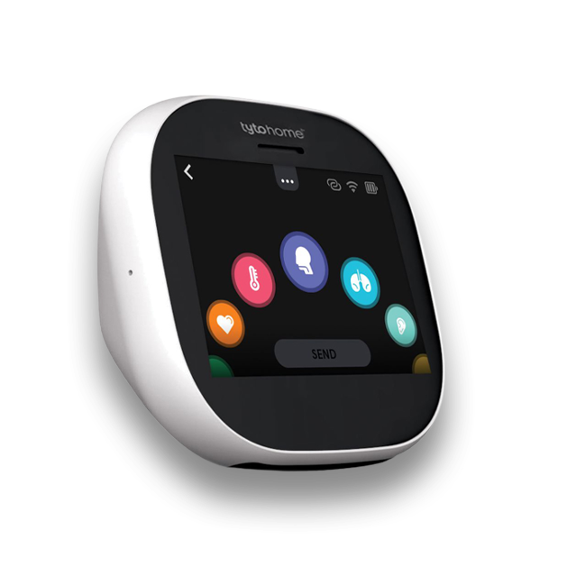

כניסתכם לתפקיד ניהולי חדש בארגון, הינה שלב משמעותי המצריך למידה של עולם תוכן רחב – מערכות, תהליכים, נהלים ושפה ארגונית שמעצבים את העשייה היומיומית ודרושים לקליטה איכותית והצלחה בתפקיד.
לפניכם סביבה שנועדה לעשות קצת סדר בתוך המורכבות, ולהנגיש את הנושאים המרכזיים שכל מנהל במאוחדת צריך להכיר כבר בתחילת הדרך.
אנו מזמינים אתכם לעיין בתכנים, לבחור מה רלוונטי עבורכם, ולצאת לדרך עם בסיס מקצועי להמשך תהליך הלמידה. זה הזמן להכיר, לשאול ולבחור את מה שיסייע לכם ביותר – ולהתחיל לייצר השפעה כבר מהיום הראשון.
בהצלחה!

כל הכלים המרכזיים שאתם צריכים בתחילת הדרך – מרוכזים במקום אחד.
כלים פרקטיים לייעול,
חדשנות והתייעלות.
העקרונות שמובילים
אותנו להצלחה.
היכרות עם החזון, הערכים
והיעדים האסטרטגיים שלנו.
היכרות עם תהליך התכנון,
היעדים והמשימות האישיות.
היכרות עם תהליכי הרכש,
נהלים וכלים חשובים.
כל מה שצריך לדעת
על תהליך ההערכה.
איך מנתחים, מבינים ומקבלים
החלטות חכמות יותר.
המודל נבנה על ידי הארגון והוא מגדיר את הציפייה הארגונית ממנהל במאוחדת.
המודל מבוסס על 4 מרכיבים משלימים, שיחד יוצרים מנהיגות אפקטיבית, מובילה ומחוברת. כלומר, הניהול במאוחדת נשען על שילוב בין כל המרכיבים – לא על אחד בלבד. כך נבנית מנהיגות משותפת ומצליחה בארגון!
ליצור שפה ניהולית אחידה ולהוות בסיס משותף לאופן שבו אנו מובילים אנשים, תהליכים ותוצאות בארגון.
המודל מהווה תשתית תומכת למגוון תהליכים בארגון:
גיוס ומיוןתכניות פיתוח מנהליםהערכה ועתודהכלי לאבחון עצמיכל מרכיב במודל כולל 3 מיומנויות ניהוליות. יחד הם יוצרים מנהיגות משותפת ומצליחה.
לעצור לרגע, לבחון היכן אנו נמצאים ביחס לממדים השונים של המודל, ולזהות נקודות לחיזוק ולהתפתחות.
לצורך כך עומד לרשותכם שאלון אישי, המסייע לתרגם את עקרונות המודל להתבוננות מעשית על סגנון הניהול האישי שלכם – ולהגדיר צעדים להתקדמות.
המחשבות שלכם נשמרות רק עבורכם.
האסטרטגיה הארגונית במאוחדת מגדירה את הכיוון, סדרי העדיפויות והמטרות של הארגון לטווח הרחוק.
עבור מנהלים, היכרות עם האסטרטגיה היא כלי עבודה חיוני שמאפשר להבין את ההקשר הרחב של הפעילות, לקבל החלטות מושכלות ולכוון את הצוות לעבר המטרות הארגוניות ולמשמעות רחבה יותר.
לכל אחד מאיתנו בתחומו, מנהלים ועובדים, יש יכולת לתרום ולהשפיע על הצלחת הקופה.
מאיפה מתחילים? היעזרו בנקודות למחשבה ←
איך אקדם את הבנת הכיוונים האסטרטגיים והטמעתם בקרב הצוות שלי?
איך אוכל לתרום במסגרת תפקידי להשגת היעדים האסטרטגיים?
איך אתן דוגמה אישית בהתנהלות יומיומית – ממוקדת אסטרטגיה?
איך אוכל להעביר הלאה את המסר, שהשינוי מתחיל בנו ושיש לנו יכולת השפעה עליו?

שימת דגש על כלל השירותים הניתנים לילדים מגיל 0–18, ובתוכם מגוון רחב של שירותים ומומחים רפואיים, תחת מעטפת אחת שנקראת: מאוחדת ג'וניור.
לחצו על כל נושא להרחבהרופא ילדים אונליין 24/7
2 מרכזים גדולים + 21 מיני ג'וניור
ליווי רפואי יוזם להורים וילדים
בדיקת רופא מרחוק
תכניות העבודה במאוחדת נגזרות מתוך האסטרטגיה הארגונית והן כוללות יעדים מדידים ואיכותיים.
לכל מנהל תכנית עבודה שנתית, אשר מלווה בבקרה ונבחנת פעמיים בשנה.
חשוב להתעדכן בתכניות היחידתיות, המחוזיות והחטיבתיות – ולהבין את התמונה הרחבה שבתוכה אתם פועלים.
המבנה העקרוני של תכנית עבודה כולל:
ודאו שכל יעד או מהלך שאתם מקדמים נגזר מכיוון אסטרטגי ברור.
נסחו יעדים עם מדד, מספר וטווח זמן – לא רק כוונה כללית.
תרגמו כל יעד לפעולות אופרטיביות שניתן לעקוב אחריהן.
בחנו התקדמות בחציון ובסוף שנה, והתאימו את התכנית במידת הצורך.
לעזרתכם, מספר כלים ומודלים שיסייעו לכם בבניית תכנית העבודה. לחצו על כל כלי להרחבה
כלי אבחון לבניית תכנית עבודה
להרחבהכלי להגדרת יעדים
להרחבהכלי לבחינת תיעדוף
להרחבהמתי נכנסים לעולם הרכש? ומה באחריותנו כמנהלים?
במאוחדת עובדים לפי נוהל רכש והתקשרויות. הנוהל מסדיר את כל דרכי ההתקשרות, הרכש והעבודה עם ספקים ונותני שירות בקופה, בהתאם לדין ולתקנות חובת המכרזים.
כמנהלים חדשים – זהו אחד הנהלים החשובים ביותר שתידרשו להכיר, משום שהוא מגדיר מה מותר, מי מוסמך, כיצד מבצעים רכש, ומהם הסיכונים הארגוניים / המשפטיים שיש להימנע מהם.
תהליך רכש תקין – ב-6 צעדים לחצו על "הצעד הבא" כדי להתקדם
הגוף המרכזי שמאשר מכרזים, פטורים, בחירת ספקים והחלטות מהותיות.
סוגי ההתקשרויות המרכזיים
ברירת המחדל
לספקים מסוימים בלבד
הליך אלקטרוני
התקשרות ארוכת טווח עם מספר ספקים
רק באישור ועדה מוסמכת ובתיעוד מלא
עקרונות יסוד – 5 כללי זהב למנהל
ברירת המחדל היא מכרז פומבי
[כלל זהב 2 – להשלמה]
[כלל זהב 3 – להשלמה]
[כלל זהב 4 – להשלמה]
[כלל זהב 5 – להשלמה]
טעויות שמנהלים חדשים עושים – ואסור שיקרו לחצו על כל טעות כדי "למחוק" אותה
כל חריגה קטנה עלולה להפוך לסיכון משפטי / רגולטורי.
תהליך שנתי ומובנה – הזדמנות לשיחה אישית, להעמקת ההיכרות ולהצבת יעדים לשנה הקרובה.
תהליך הערכה שנתי ומובנה, המהווה הזדמנות לשיחה אישית עם המנהל הישיר, להעמקת ההיכרות, לשיח על התפתחות, לחגיגת הצלחות וללמידה מהאתגרים שחווינו בשנה החולפת – בדרך להצבת יעדים לשנה הקרובה.
תהליך הערכת הביצועים במאוחדת בנוי מ-3 שלבים לחצו על כל שלב
מה אתם צריכים לעשות עם זה?
בשלב הזה חשוב בעיקר להכיר את התהליך ולהבין שהוא חלק ממחזור העבודה השנתי. אין צורך להיערך אליו כבר עכשיו או לבצע פעולות מיוחדות.
כשהמועד יתקרב והתהליך יהיה רלוונטי עבורכם, נדאג לשתף את כל המידע הנדרש, נסביר מה מצופה מכם בכל שלב ונזמין אתכם להדרכות שייתנו לכם את כל הכלים והידע הדרושים.
החלטות מדויקות, זיהוי מגמות ושיפור ביצועים לאורך זמן.
ניהול מבוסס נתונים הוא אחד הכלים המרכזיים העומדים לרשות מנהל בבואו לקבל החלטות מדויקות, לזהות מגמות ולשפר ביצועים לאורך זמן.
חשוב לבחון אילו נתונים ודוחות נדרשים לנו כדי לנהל בצורה טובה יותר ולקדם מהלכים.
היקף השימוש בנתונים משתנה מתפקיד לתפקיד. במאוחדת עומדים לרשותכם המנהלים נתונים ממגוון רחב של מערכות ומקורות שכדאי להכיר.
מערכת רימון מרכזת את המדדים העסקיים ליחידות השטח ומאפשרת לראות תמונת מצב עדכנית ואחידה של פעילות היחידה (למשל מרפאה) ביחס ליעדים הארגוניים. באמצעות מחוונים כגון סרגל השירות ניתן לזהות מוקדי חוזק לצד הזדמנויות לשיפור.

גם אם הדבר פחות רלוונטי לתפקידכם, חשוב להכיר את מדדי הליבה הארגוניים – לטובת הובלה משותפת של יעדי הארגון.
* המדדים בסרגלים עשויים להשתנות מעת לעת בהתאם למיקוד הניהולי בהנהלה.
סיימתם את הסיור במרכז הניהול במאוחדת. התכנים יישארו זמינים עבורכם בכל עת – חזרו אליהם כשתצטרכו.
בהצלחה בתפקיד החדש!
בשנת 2025 ערכנו סקר בקרב רופאים, בו הם העידו כי מאוחדת היא אכן הקופה המועדפת על פני הקופות האחרות!
שיעור המשיבים בכל קטגוריה. רחפו מעל עמודה להצגת הערך.
מענה של רופא ילדים אונליין 24/7 באמצעות המיון ההיברידי, ומוקד אחיות להיוועצות רפואית.
2 מרכזי ג'וניור גדולים:
מרכז מאוחדת ג'וניור בירושלים | מרכז ג'וניור במרכז רפואי ראם ברחובות
ועוד 21 מרכזי מיני ג'וניור שנפתחו ברחבי הארץ.
שירות מעקב וליווי רפואי יוזם (פרואקטיבי), המלווה הורים וילדים בכל אחד משלבי התפתחות הילד – מגיל לידה ועד גיל 6, ובקרוב עד גיל 18.
השירות כולל משימות להורים לטיפול רפואי שהתינוק או הילד נדרשים לו. המשימות מופיעות באפליקציית מאוחדת תחת הכפתור "בריאות הילד/ה", ונשלחות גם במייל, ב-SMS ובהודעה קולית לטלפונים כשרים.

מכשיר הדוגם מדדים רפואיים, הנשלחים לרופא לצורך בדיקת רופא מרחוק – בשיחת וידאו היברידית.
כתבו:
הסתמכו על נתונים, לא על תחושות.
שאלו:
בחרו נקודה אחת בלבד.
רשמו את כל המהלכים האפשריים
דרגו כל מהלך לפי שני פרמטרים:
השפעה על היעד (נמוכה / בינונית / גבוהה)
מאמץ נדרש (נמוך / בינוני / גבוה)
מקמו בריבוע התיעדוף